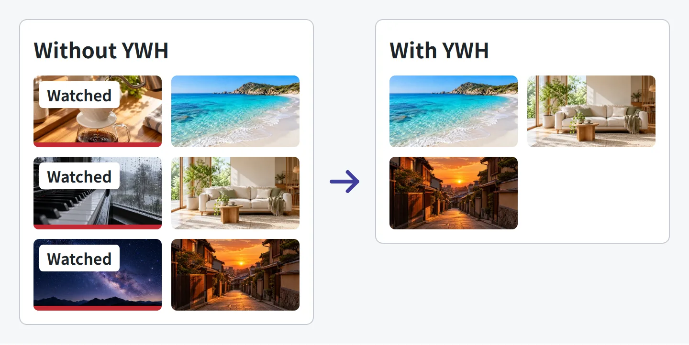
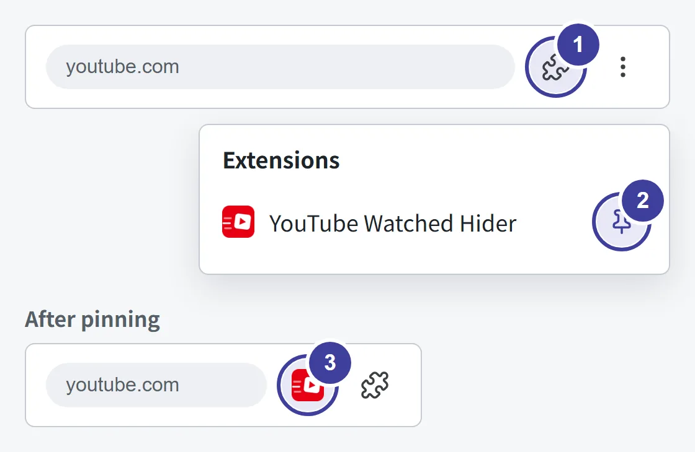
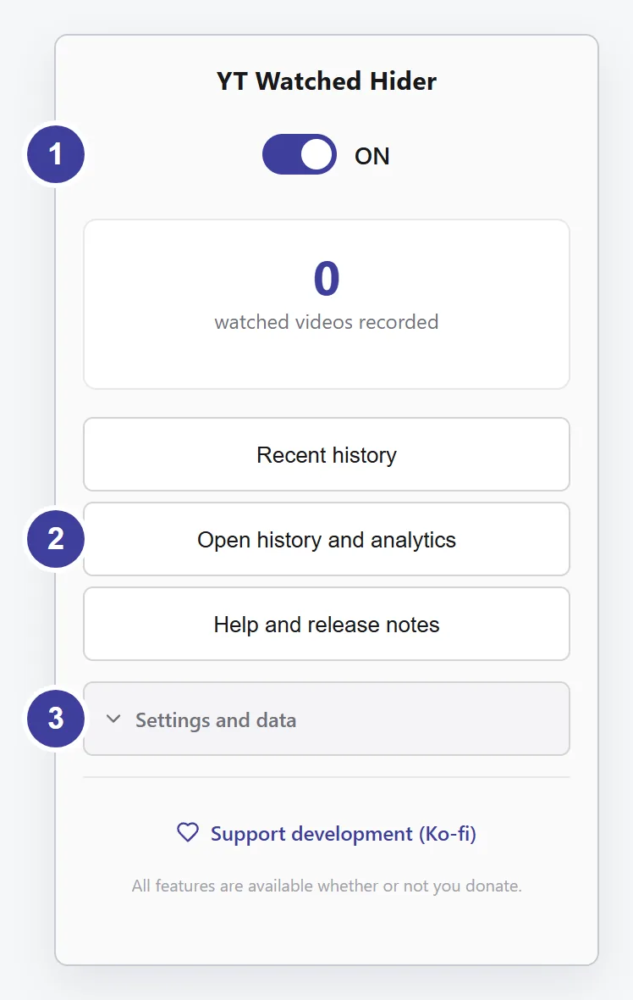

YouTube Watched Hider
Getting started
A short guide to your first steps, based on the extension’s “Help and release notes”.
1. Install and open YouTube
- Open the Chrome Web Store link below in Chrome on your computer.
- Check the name YouTube Watched Hider and publisher sasaki.s.role, review the permissions, then add the extension.
- Open YouTube. Reload any YouTube tabs you already had open.
- Watch as usual. Videos YWH detects and records as watched will be hidden from subsequent lists.

Installing the extension does not automatically import your entire past watch history. Start with videos you watch after installation.
2. Choose what stays visible
Open Chrome’s extensions menu (the puzzle icon) and select the YWH icon to open its controls. Pin it to the toolbar so it is always one click away.

- Select the puzzle icon
- Select the pin next to YouTube Watched Hider
- The YWH icon now stays on the toolbar

- Top switch: turn hiding ON / OFF
- “Open history and analytics”: search history, music analytics
- “Settings and data”: per-page hiding, dimming, backup
Bring hidden videos back
Use ON / OFF at the top to toggle hiding. Hiding a video does not delete it from YouTube.
Keep watched videos in search results
Turn off Settings and data → Hide videos by page → Hide in search results. You can configure six places separately: Home, Subscriptions, channel pages, playlist pages, search results and related videos.
Dim videos instead of hiding them
Turn on Settings and data → Dim watched videos instead of hiding.
How does YWH decide a video is watched?
It records videos when playback ends, or when it detects them as watched in YouTube lists. For a list’s progress bar, set Settings and data → Watched threshold (%) from 1–100%. The default is 95%.
This is not a measure of your actual watch time. Changing the threshold does not alter records already saved.
3. Revisit your history and music
From the extension’s controls, choose Open history and analytics. Browse and search recorded videos, or explore your music history.
View artist rankings from Topic channel history, or look back using channels and keywords.
Total duration adds up video lengths, not your actual watch time. It does not account for partial views, playback speed or repeats.
4. Keep a copy of your history
Choose Settings and data → Back up now to download a JSON file. To restore one, choose Restore a backup and select the file.
You can replace the current data or merge the backup into it. Replacing rolls back to the backup, so records missing from that backup will be lost. Check the counts and restore method shown before proceeding.
Uninstalling removes the history stored inside your browser. Back it up first if you want to keep it. Downloaded JSON backup files are not removed; manage them separately.
More help inside the extension
Open YWH icon → Help and release notes for instructions and changes for your installed version.
This guide covers the basics in public version v1.60.79. Wording and layout may differ by display language or installed version.
Report a problemChecked October 11, 2026. Based on public tag v1.60.79, the store listing and the built-in guide.